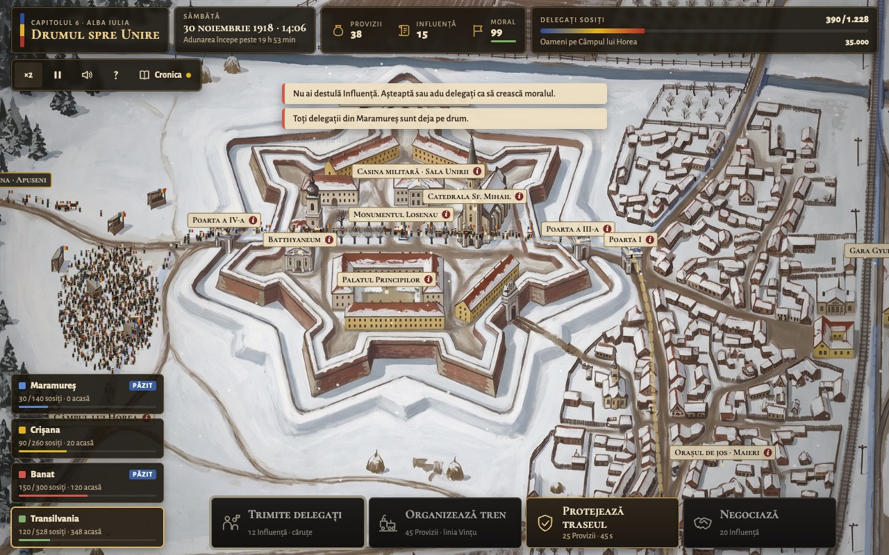
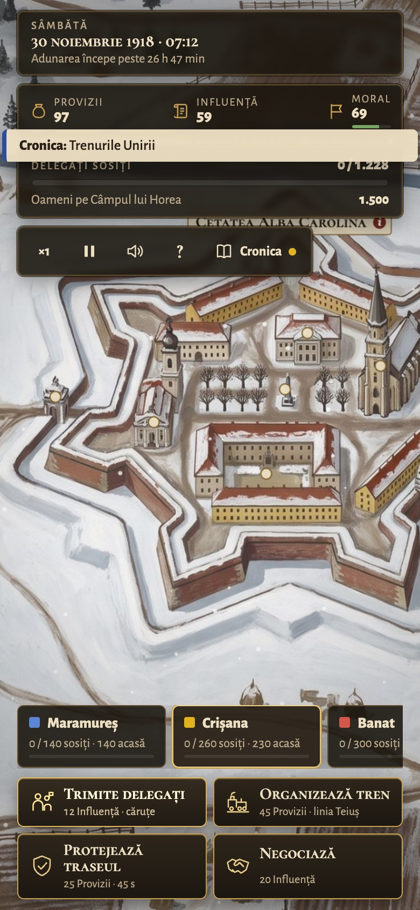
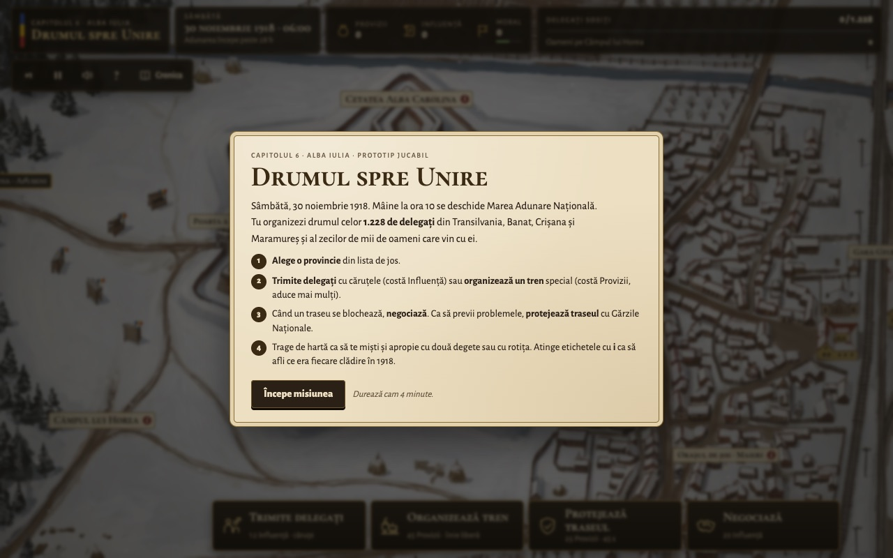
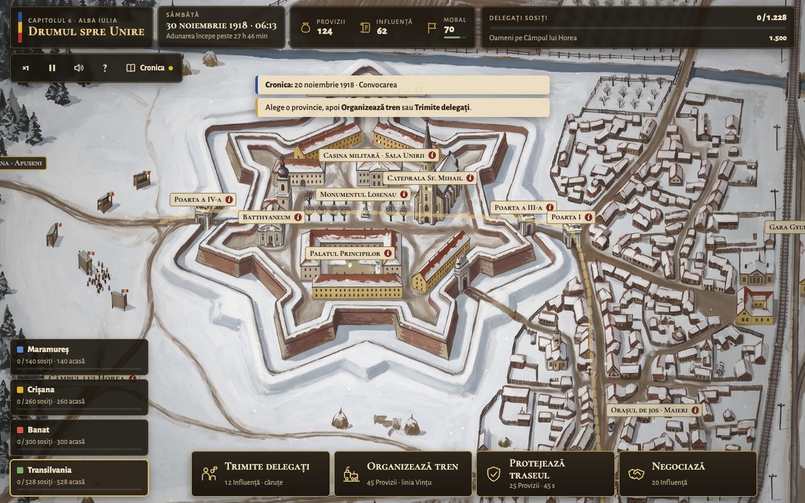
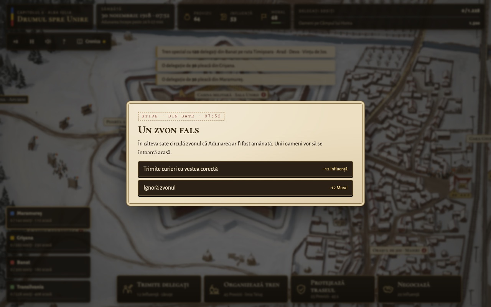
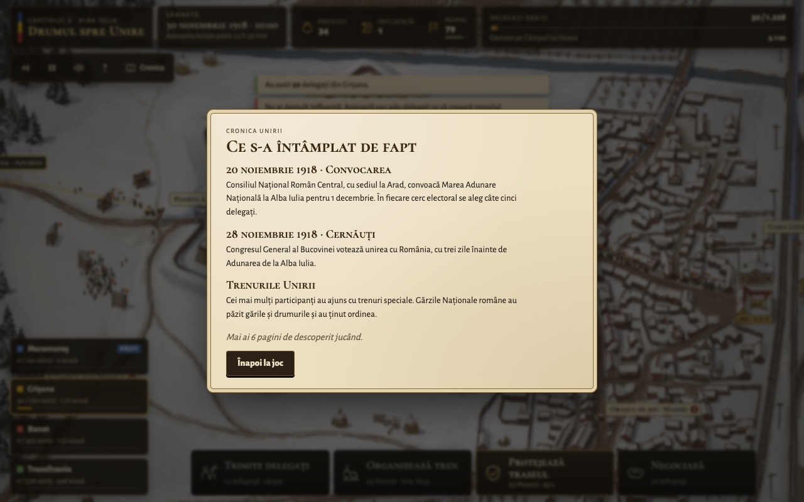
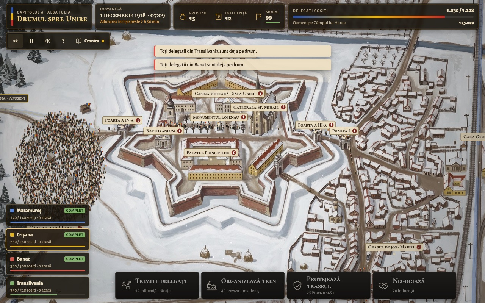
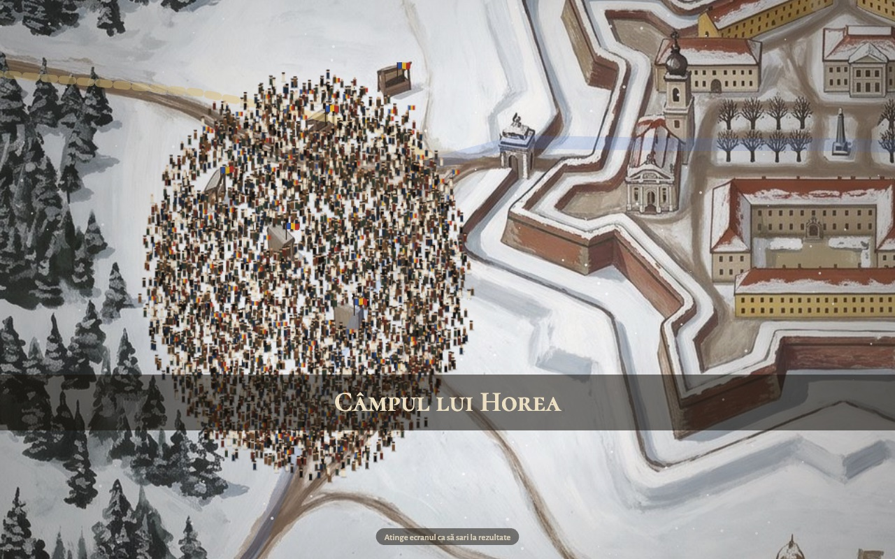
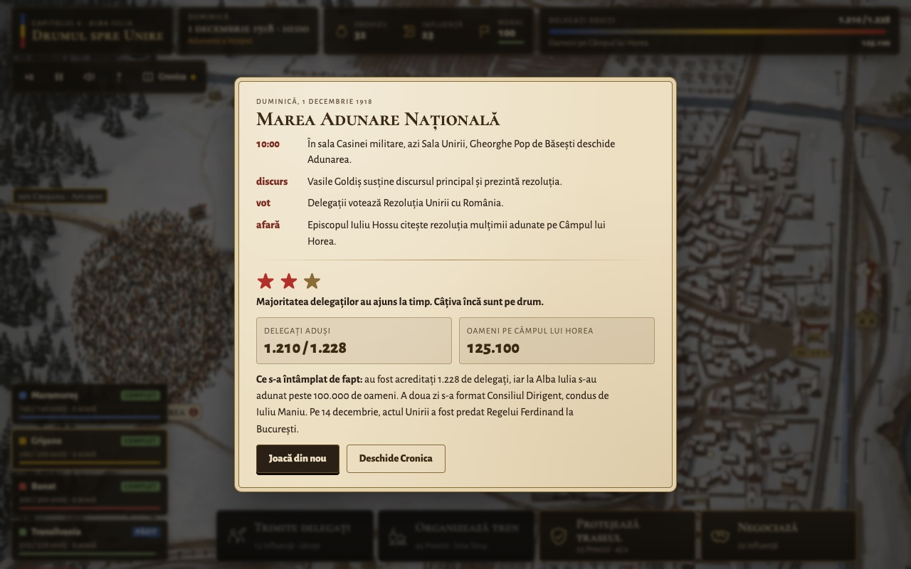

Capitolul 6 · Alba Iulia · prototip jucabil · Cramba App Studio
Drumul spre Unire
Un joc de strategie și logistică pe care îl joci în patru minute, pe telefon sau pe calculator. Organizezi sosirea delegaților la Marea Adunare de la Alba Iulia, 30 noiembrie – 1 decembrie 1918.

Joc în desfășurare, sâmbătă seara. Mulțimea crește pe Câmpul lui Horea, la vest de cetate. În stânga jos sunt cele patru provincii, jos sunt cele patru acțiuni.
1.228delegați de adus la timp
~4 mino partidă completă
28 hde timp istoric (06:00 → 10:00)
4provincii, 4 acțiuni
Ce este jocul
E sâmbătă, 30 noiembrie 1918, ora 06:00. Mâine la ora 10 se deschide Marea Adunare Națională. Tu ești cel care face ca ea să aibă loc cu sala plină: trimiți delegații din Maramureș, Crișana, Banat și Transilvania, organizezi trenuri speciale, deblochezi drumurile acoperite de zăpadă și ții moralul oamenilor sus. La final vezi cum urcă mulțimea pe Câmpul lui Horea și ce s-a întâmplat de fapt în 1918.
Jocul e educațional: harta, orașele, porțile cetății și evenimentele sunt cele din 1918, iar fiecare alegere deblochează câte o pagină din Cronica Unirii. Țintă de lansare: 1 Decembrie 2026.
Cu ce seamănă
Gestiune de resurse în timp real
Ca într-un RTS ușor: ai trei resurse, un ceas care merge și trebuie să decizi repede unde le cheltui. Nu construiești și nu lupți, doar organizezi mișcarea oamenilor.
Jocurile de trasee și logistică
Mini Metro e comparația cea mai apropiată: urmărești cum curg coloanele pe drumuri și pe calea ferată și intervii când se înfundă ceva.
Cărțile de decizie
Evenimentele vin ca telegrame cu două sau trei alegeri, fiecare cu un cost, ca în Reigns sau Frostpunk. Nu există răspuns perfect, doar compromisuri.
Jocurile istorice educaționale
Aproape de Valiant Hearts sau Through the Darkest of Times prin ton: istoria nu e o poveste de fundal, ci tema jocului. Diferența: aici nu e război, e diplomație și organizare.
Obiectivul
Aduci cât mai mulți din cei 1.228 de delegați până când ceasul ajunge la 1 decembrie, ora 10:00. Pe lângă ei vin și zeci de mii de oameni, care se strâng pe Câmpul lui Horea și apar în scorul final. Rezultatul se măsoară în stele:
Alegi o provincie din lista din stânga jos. Fiecare are drumul ei și o linie de cale ferată (Banat și Transilvania vin dinspre sud, pe linia Vințu, Maramureș și Crișana dinspre nord, pe linia Teiuș).
Trimiți delegați cu căruțele (12 Influență, 30 de delegați) sau organizezi un tren special (45 Provizii, până la 120 de delegați și mii de oameni, dar o singură dată pe linie, până ajunge).
Când un traseu se blochează, negociezi (20 Influență). Ca să previi blocajele, protejezi traseul cu Gărzile Naționale (25 Provizii, 45 s, coloanele merg mai repede).
Răspunzi la telegramele care apar la 15–25 de secunde: viscol, locomotivă fără cărbune, zvon fals, cazare. Jocul se oprește cât citești.
Poți trage de hartă, apropia cu două degete și atinge etichetele cu i ca să afli ce era fiecare clădire în 1918.
Pe calculator: 1–4 alege provincia, D delegați, T tren, P protejează, N negociază. Butonul ×2 dublează viteza.

Pe telefon. Interfața trece pe portret: acțiunile se așază 2×2, iar provinciile se derulează lateral.
Cele trei resurse
Provizii
Hrană, cărbune, căruțe. Plătesc trenurile și paza.
Influență
Autoritatea Consiliului Național. Plătește delegațiile și negocierile.
Moral
Entuziasmul oamenilor. Scade încet, se reface prin sosiri și alegeri bune. Un moral mare grăbește coloanele și umple mai repede resursele.
O partidă, în imagini

1. Începutul. Ecranul de start explică misiunea și cele patru reguli în câteva rânduri.

2. Sâmbătă, 06:13. Cetatea Alba Carolina, porțile și orașul de jos. Primele 1.500 de oameni sunt deja pe câmp.

3. O telegramă. „Un zvon fals”: plătești curieri sau ignori zvonul și pierzi moral. Fiecare alegere își arată costul.

4. Cronica Unirii. Paginile se deblochează după oră sau după acțiuni și rămân salvate între partide.

5. Duminică, 07:09. Trei provincii sunt complete. Mulțimea de 105.000 de oameni a umplut câmpul.

6. Finalul cinematic. La 10:00 camera trece de la Sala Unirii la Poarta a IV-a și apoi deasupra mulțimii (12 secunde, se poate sări).

7. Rezultatul. Ce s-a întâmplat de fapt la Adunare (cine a deschis-o, cine a citit rezoluția), stelele câștigate, delegații aduși și mulțimea adunată.
Sfaturi pentru prima partidă
Trenurile aduc cei mai mulți oameni, deci pornește unul pe fiecare linie cât mai devreme și apoi din nou, imediat ce ajunge.
Influența se termină repede dacă trimiți căruțe la întâmplare. Păstrează 20 pentru o negociere când se blochează un traseu.
La un blocaj, uită-te la etichetă (viscol, pod aglomerat, fără cărbune): uneori e mai ieftin să alegi varianta care te lasă să aștepți, alteori nu.
Nu lăsa moralul să scadă: un moral mare accelerează și resursele, și coloanele.
Stadiul: prototip jucabil, doar în română, cu sunet sintetizat (vânt, mulțime, trenuri, clopote). Capturile din acest document au venit dintr-o partidă jucată automat, de aceea rezultatul e de două stele și nu de trei. Textele din Cronică și poziția clădirilor din cetate urmează să fie verificate cu un istoric înainte de a ajunge în școli.